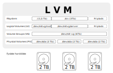

LVM (Logical Volume Management) som bruges til at administrere harddiske på Ubuntuserveren.
Ved hjælp af LVM kan du:
Udvide og indskrænke størrelsen på dine partitioner.
Tilføje og udskifte harddiske efter behov.
LVM har ikke indbygget mirroring (backup) ligesom RAID, hvilket i forhold til en hjemmeserver ikke er det store problem, da man altid har brug for ekstern backup hvis. For at sikre sine data med LVM kan man:
Købe nye harddiske med jævne mellemrum, for at sikre sig at selve hardwaren ikke fejler
Sørge for ekstern backup, så man kan gendanne data. (også et behov ved RAID)
Opbygning af LVM
For at forstå LVMs opbygning skal du have styr på nogle grundbegreber
PV - Physical Volumes (fysiske drev)
PV'en er selve harddiskene (block devices). I LVM kan man tilføje og fjerne harddiske løbende og efter behov
VG - Volume Groups (Gruppering af fysiske partitioner)
VG'en består af en eller flere PV'er. Ved at tilføje harddiske (PV) kan man udvide størrelsen
LV - Logical Volumes (Logiske drev)
LV'erne er det vi normalt ville betegne som partitioner. I et LVM kan partitionerne spænde sig over mange harddiske. LV'er kan udvides efter behov.

Harddiskadministration
Resten af gennemgangen forudsætter at du har en grundlæggende forståelse for hvordan man opsætter harddiske på Ubuntu.